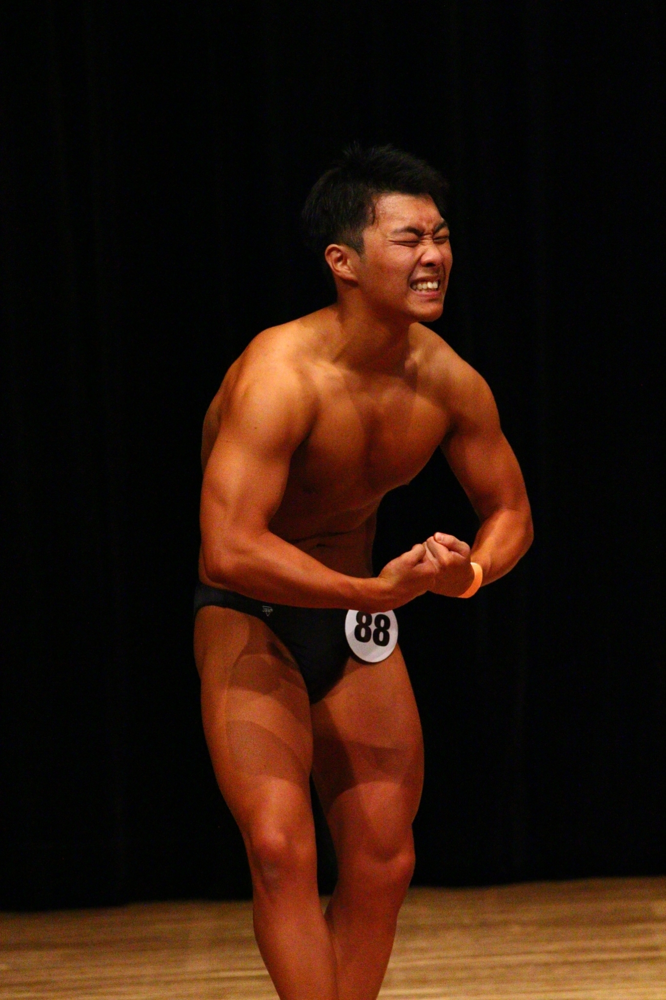

自己紹介

名前:田崎 和輝(タサキ カズキ)
生年月日:2001年04月19日生まれ
趣味:トレーニング
ボディビルをやっています
慶應義塾大学 環境情報学部4年(2024年3月卒業予定)
名前:田崎 和輝(タサキ カズキ)
生年月日:2001年04月19日生まれ
趣味:トレーニング
ボディビルをやっています
2020年4月 慶応義塾大学 環境情報学部入学
2021年6月~現在(2022年11月) ペイトナー株式会社にインターンとして参加https://paytner.co.jp
2024年3月 大学卒業予定